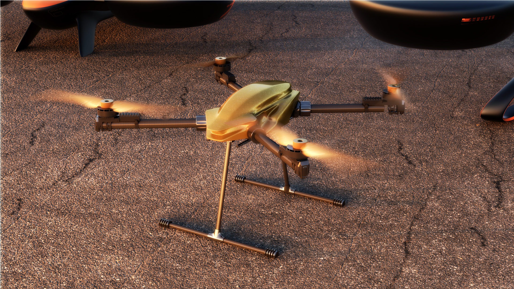

A compact high-capability professional UAV platform
Designed for payload, inspection, imaging, and specialized field operations.
Reach is InSky’s lead near-term commercial platform. It combines low structural weight, strong useful payload capability, and a broad mission envelope in a compact professional aircraft.

Specifications and endurance
Capability beyond the standard threshold
Reach is designed for capability beyond the standard 55 lb U.S. small-UAS threshold.
In the United States, operations above that threshold require the appropriate regulatory exemption, including 44807 where applicable.


Built for serious field use
- infrastructure inspection
- public safety support
- cinematography and specialty payload work
- research operations
- specialized logistics
- compact high-capability field deployment
Reach is designed as a professional platform with meaningful payload, compact deployment, modular mission integration, and compatibility with established professional accessory workflows.
Discuss a mission
If you are evaluating Reach for a payload, inspection, specialty operations, or field deployment requirement, InSky can review mission fit and operating requirements directly.
Discuss a mission